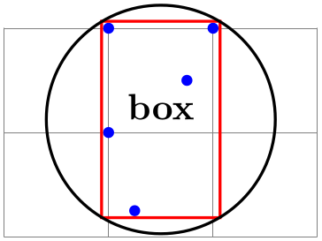
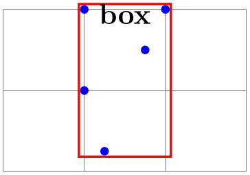
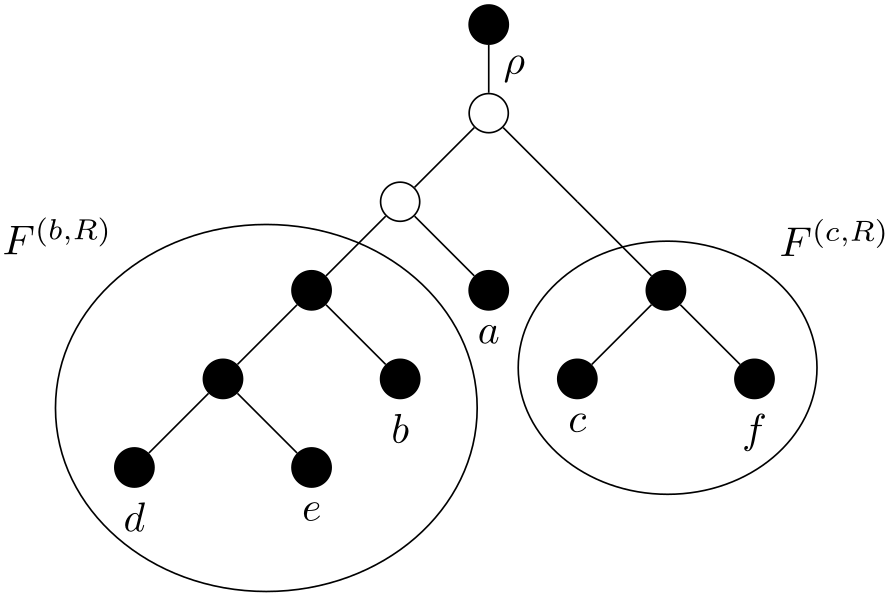
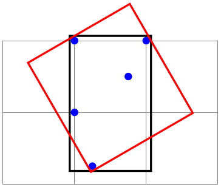

The TikZ and PGF Packages
Manual for version 3.1.10
Libraries
54 Fitting Library¶
-
TikZ Library fit ¶
\usetikzlibrary{fit} %
LaTeX
and plain
TeX
\usetikzlibrary[fit] % ConTeXt
The library defines (currently only two) options for fitting a
node so that it contains a set of coordinates.
When you load this library, the following options become available:
-
/tikz/fit=⟨coordinates or nodes⟩(no default) ¶
-
/tikz/every fit(style, initially empty) ¶
-
1. A minimal bounding box containing all coordinates is computed. Note that if a coordinate like (a) is used that contains a node name, this has the same effect as explicitly providing the (a.north) and (a.south) and (a.west) and (a.east). If you wish to refer only to the center of the a node, use (a.center) instead.
-
2. The text width option is set to the width of this bounding box.
-
3. The align=center option is set.
-
4. The anchor is set to center.
-
5. The at position of the node is set to the center of the computed bounding box.
-
6. After the node has been typeset, its height and depth are adjusted such that they add up to the height of the computed bounding box and such that the text of the node is vertically centered inside the box.
This option must be given to a node path command. The ⟨coordinates or nodes⟩ should be a sequence of TikZ coordinates or node names, one directly after the other without commas (like with the plot coordinates path operation). Examples are (1,0) (2,2) or (a) (1,0) (b), where a and b are nodes.
For this sequence of coordinates, a minimal bounding box is computed that encompasses all the listed ⟨coordinates or nodes⟩. For coordinates in the list, the bounding box is guaranteed to contain this coordinate, for nodes it is guaranteed to contain the east, west, north and south anchors of the node. In principle (the details will be explained in a moment), things are now set up such that the text box of the node will be exactly this bounding box.
Here is an example: We fit several points in a rectangular node. By setting the inner sep to zero, we see exactly the text box of the node. Then we fit these points again in a circular node. Note how the circle encompasses exactly the same bounding box.

\usetikzlibrary {fit}
\begin{tikzpicture}[inner sep=0pt,thick,
dot/.style={fill=blue,circle,minimum size=3pt}]
\draw[help lines] (0,0) grid
(3,2);
\node[dot] (a) at
(1,1) {};
\node[dot] (b) at
(2,2) {};
\node[dot] (c) at
(1,2) {};
\node[dot] (d) at
(1.25,0.25) {};
\node[dot] (e) at
(1.75,1.5) {};
\node[draw=red, fit=(a) (b) (c) (d) (e)] {box};
\node[draw,circle,fit=(a) (b) (c) (d) (e)] {};
\end{tikzpicture}
Every time the fit option is used, the following style is also applied to the node:
Set this style to change the appearance of a node that uses the fit option.
The exact effects of the fit option are the following:
The above means that, generally speaking, if the node contains text like box in the above example, it will be centered inside the box. It will be difficult to put the text elsewhere, in particular, changing the anchor of the node will not have the desired effect. Instead, what you should do is to create a node with the fit option that does not contain any text, give it a name, and then use normal nodes to add text at the desired positions. Alternatively, consider using the label or pin options.
Suppose, for instance, that in the above example we want the word “box” to appear inside the box, but at its top. This can be achieved as follows:

\usetikzlibrary {fit}
\begin{tikzpicture}[inner sep=0pt,thick,
dot/.style={fill=blue,circle,minimum size=3pt}]
\draw[help lines] (0,0) grid
(3,2);
\node[dot] (a) at
(1,1) {};
\node[dot] (b) at
(2,2) {};
\node[dot] (c) at
(1,2) {};
\node[dot] (d) at
(1.25,0.25) {};
\node[dot] (e) at
(1.75,1.5) {};
\node[draw=red,fit=(a) (b) (c) (d) (e)] (fit) {};
\node[below] at
(fit.north) {box};
\end{tikzpicture}
Here is a real-life example that uses fitting:

\usetikzlibrary {fit,shapes.geometric}
\begin{tikzpicture}
[vertex/.style={minimum size=2pt,fill,draw,circle},
open/.style={fill=none},
sibling distance=1.5cm,level distance=.75cm,
every fit/.style={ellipse,draw,inner sep=-2pt},
leaf/.style={label={[name=#1]below:$#1$}},auto]
\node [vertex] (root) {}
child
{ node
[vertex,open] {}
child
{ node
[vertex,open] {}
child
{ node
[vertex] (b's parent) {}
child
{ node
[vertex] {}
child
{ node
[vertex,leaf=d] {} }
child
{ node
[vertex,leaf=e] {} } }
child
{ node
[vertex,leaf=b] {} } }
child
{ node
[vertex,leaf=a] {} } }
child
{ node
[coordinate] {}
child[missing]
child
{ node
[vertex] (f's parent) {}
child
{ node
[vertex,leaf=c] {} }
child
{ node
[vertex,leaf=f] {} } } }
edge
from
parent
node
{$\rho$} };
\node [fit=(d) (e) (b) (b's parent),label=above left:$F^{(b,R)}$] {};
\node [fit=(c) (f) (f's parent),label=above right:$F^{(c,R)}$] {};
\end{tikzpicture}
-
/tikz/rotate fit=⟨angle⟩ (no default, initially 0) ¶
This key fits ⟨coordinates or nodes⟩ inside a node that is rotated by ⟨angle⟩. As a side effect, it also sets the /tikz/rotate key.

\usetikzlibrary {fit}
\begin{tikzpicture}[inner sep=0pt,thick,
dot/.style={fill=blue,circle,minimum size=3pt}]
\draw[help lines] (0,0) grid
(3,2);
\node[dot] (a) at
(1,1) {};
\node[dot] (b) at
(2,2) {};
\node[dot] (c) at
(1,2) {};
\node[dot] (d) at
(1.25,0.25) {};
\node[dot] (e) at
(1.75,1.5) {};
\node[draw, fit=(a) (b) (c) (d) (e)] {};
\node[draw=red, rotate fit=30, fit=(a) (b) (c) (d) (e)] {};
\end{tikzpicture}